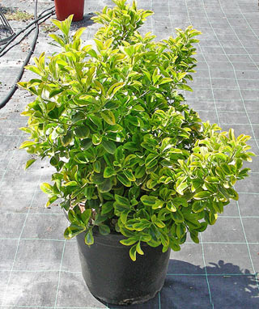

| Растения |
|
Предлагаем Вашему вниманию растения собственного питомника в г. Черновцы
Мшанка (Sagina)
Родина: распространена в умеренных и холодных районах Европы.
Характеристика: мшанка– это многолетнее растение, образующее густые, небольшие, вечнозеленые подушки около 8 см высотой, напоминающие зеленый мох. Стебли ветвистые, ползучие. Листья очень мелкие, расположены супротивно. Цветки до 0,5 см в диаметре, белые. Цветет обильно в июле — сентябре. Есть садовые разновидности с желтыми листьями.
Месторасположение: мшанкахорошо растет и обильно цветет на солнечных местах. Это зимостойкое растение, но в бесснежные зимы вымерзает. При избытке влаги осенью и зимой погибает.
Почва: мшанкапредпочитает суглинистую почву.
Уход: поливать мшанку следует достаточно часто, не давая верхнему слою почвы пересыхать. При этом не менее важно, чтобы излишки влаги быстро просачивались в нижние горизонты почвы.
Седум (очиток) Характеристика: голые или опушенные простыми или железистыми волосками, мясистые, прямые или приподнимающиеся, часто образующие дерновинки или моховидные подушки, однолетники, травянистые многолетники и кустарнички. Листья разнообразны по форме, размерам и окраске, очередные, супротивные или мутовчатые, цельнокрайние или малозубчатые по краю. Соцветия обычно верхушечные, реже боковые, в основном щитковидные, редко цветки одиночные, белые, желтые или розовые, редко красные или голубые. Месторасположение: светолюбивые, расцветка листьев многих видов на солнце ярче и сочнее, некоторые даже приобретают характерный румянец или загар. В условиях недостаточной освещенности они перестают цвести и сильно вытягиваются, теряя свой вид так, что их невозможно узнать. Очитки следует размещать так, чтобы их осенью не осыпали листья деревьев. Почва: все седумы неприхотливы, хорошо развиваются на любой окультуренной почве с внесением небольшого количества перегноя или компостной земли. Уход: по окончании 3-6 годов их необходимо делить или перечеренковывать для поддержки ровных ковров. При уходе необходимо предусматривать частое и очень тщательные прополки, поскольку седумы абсолютно не конкурентоспособные по отношению к сорнякам. Практически все очитки чрезвычайно засухоустойчивы, так что поливать их след лишь в совсем засушливое лето и, конечно же, после посадки. Седум "отогнутый" (Sedum reflexum) Седум "зибольта" (Sedum sieboldii) Седум "едкий" (Sedum acre) Седум "тонкий" (Sedum gracile) Молодило "кавказское" (Sempervivum caucasicum) Родина: встречается на Кавказе, в западной Европе, в Карпатах. Характеристика: молодило "кавказское" – многолетнее, вечнозеленое растение, высотой 12-20 см. Стебли пушистые, с белыми волосками. Листья мускулистые яйцеобразные, голые с острыми концами, собраны в прикорневые розетки “розочки” до 10 см в диаметре. Цветки мелкие, правильные розового или красного цвета. Цветет в июне – августе, в течение двух месяцев. Месторасположение: молодило достаточно стойкое растение, которое не любит застоя воды, потому нуждается в дренаже. Засухоустойчиво, затенение, в том числе сорняками или опавшим листьями, им противопоказано. Почва: молодило "кавказское" хорошо разрастается на любых окультуренных почвах, кроме сырых. Любит сухую, бедную, песчаную почву. Уход: заключается в своевременном удалении сорняка и сухих соцветий вместе с отмершей розеткой листьев. В сырой земле нижние листья в розетке начинают подгнивать. Это первый признак избыточного увлажнения. Раз в 3-5 лет молодило рассаживают. Флокс "шиловидный"   Родина: около 60 видов флоксов, распространенные в Северной Америке. Характеристика: флокс "шиловидный" – многолетнее, почвопокровное растение, высотой 10-12 см. Создает низкие, плотные подушечки, с ярко-красными цветками. Цветет с середины апреля до июня. Листья мелкое, узкое шиловидное. Месторасположение: флокс - растение светолюбивое, неплохо переносит и полутень, морозоустойчиво, не терпит застоя воды. Используют для оформления подпорных стенок, каменных садов, миксбордеров и как почвопокровную культуру в сочетании с луковичными растениями. Почва: лучше растет на дренажной, нейтральной почве. Уход: на одном месте флокс "шиловидный" может расти 4-5 лет, пересадку выдерживает даже в период вегетации. ЦВЕТУЩИЕ
Астильба (аstilbe)
Родина: распространенная в Восточной Азии, Японии и Северной Америке.
Характеристика: астильба это многолетние корневищное травянистое растения с отмирающей на зиму надземной частью. Стебли прямостоячие, высота в зависимости от вида - от 8 до 200 см. Многочисленные прикорневые листья на длинных черешках, дважды или трижды перистые, реже простые, темно-зеленые или красновато-зеленые, зубчатые. Мелкие цветки, белые, розовые, сиреневые, красные или пурпурные, собраны в верхушечные соцветия – метелки различной длины. Наиболее эффектны астильбы во время цветения. Их нежные соцветия появляются в начале июля и не теряют привлекательности в течение 25-35 дней. Корневище плотное или рыхлое в зависимости от вида, деревянистое.
Месторасположение: при выборе места очень важны сроки цветения. Ранние и поздние сорта астильбы хорошо и длительно цветут как в тени, так и на солнце, а вот среднецветущим растениям лучше присмотреть притененные уголки, так как яркое июльское солнце резко сокращает сроки их цветения.
Почва: большинство сортов может расти в местах с довольно высокими грунтовыми водами и переносит даже застой воды. Долгосрочную засуху астильба не переносит. Бедная почва, открытый солнцепек и отсутствие дождей могут погубить растение. Поможет растениям и плодородная почва, загущенная посадка, мульчирование стружкой или корой. Астильбы очень плохо переносят перегревание верхней части корневища, а мульча способствует уменьшению перегрева, потери влаги, сохраняет рыхлость почвы, препятствует появлению сорняков и, что очень важно, создает благоприятные условия для зимовки.
Уход: уход за астильбой состоит главным образом в поддержании влажности почвы. В конце осени к основаниям кустов подсыпают плодородную землю.
Ирис (Iris)
Родина: известно 250 видов, произрастающих в Европе, Азии, Северной Америке, Северной Африке.
Характеристика: ирис – многолетние травянистые корневищные растения. Имеют два типа побегов: вегетативные и генеративные. Вегетативные побеги — многолетние, подземные корневища, погруженные в почву или расположенные на поверхности, состоящие из отдельных годичных звеньев, несущих пучки листьев. На нижней поверхности корневища развиваются шнуровидные или нитевидные, мочковатые придаточные корни. Генеративные побеги (цветоносы) — однолетние, одиночные или по нескольку. Листья мечевидные, плоские, двухрядные, иногда линейные, тонкие, с восковым налетом, собраны большей частью при основании цветоносов вееровидными пучками. Стеблевых листьев мало или их нет. Цветки одиночные или в малоцветковых соцветиях, у отдельных видов душистые, отличаются изящной формой и богатой гаммой разнообразных оттенков, от чисто-белых, желтых, голубых до фиолетовых и почти черных. Цветок крупный, простой, из шести лепестковидных долей околоцветника. Цветут ирисы с мая по июль.
Месторасположение: ирис, благодаря своей красоте и изяществу, по праву занимает среди садовых цветов своё место под солнцем. Зимостоек, хорошо переносит холодное время года в средней полосе.
Уход: сводится к стандартным процедурам прополки, рыхления почвы, подкормке и поливе. Поливать их следует умеренно и в вечернее время. Рыхление проводят неглубокое, чтобы не повредить близко расположенные корни, и по влажной земле, одновременно удаляя сорняки. Подкармливают три раза за сезон. В конце лета, когда садовые цветы готовят к зимовке после полного окончания цветения, цветоносы удаляют у самого их основания. Также удаляют жёлтые листья. При наступлении первых заморозков листья обрезают наполовину их высоты, а посадки укрывают слоем торфа толщиной 10 см. Весной этот слой убирают.
Рудбекия “блестящая” (Rudbeckia fulgida)
Родина: произрастает в юго-восточных районах Северной Америки.
Месторасположение: рудбекия “блестящая” многолетнее растение до 60 см высотой. Листья цельные, узкие, ланцетные. Соцветия — корзинки до 9 см в диаметре. Язычковые цветки оранжево-желтые, трубчатые — темно-пурпуровые. Цветет в июле-августе 40-45 дней. Плодоносит.
Характеристика: рудбекия “блестящая” предпочитает открытые солнечные места
Почва: требует хорошо окультуренные, плодородные, глинистые почвы.
Уход: поливайте рудбекию в сухую погоду, растение плохо переносит жару и засуху. Если постепенно удалять отцветшие соцветия, можно продлить период цветения. Подвязывайте. Осенью срежьте полностью.
ЛИСТВЕННЫЕ Барбарис "тунберга" (Berberis)  Родина: Китай и Япония. Характеристика: барбарис “тунберга” – листопадный, колючий кустарник с компактной, округлой кроной, высотой до 2,5 м.. Листья овальные, мелкие, светло-зеленые летом и светло-красное – осенью. Дугообразно отклоненные побеги предоставляют этому виду барбариса особенную декоративность. Плоды – ягоды, светло-красные, блестящие, долго держатся на растении, украшая его и при отсутствии листьев. Месторасположение: барбарис неприхотлив, светолюбив, зимостойкий кустарник, хорошо растет в городских условиях. Барбарис хорошо переносит стрижку, которая дает ему возможность держать заданную форму. Вовсе не переносит застоя влаги, лучше растет на светлом месте. Почва: к почве неприхотлив. Уход: подпитывают барбарис "тунберга", начиная с второго года после того, как посадили. Весной вносят азотные удобрения. Потом подпитывают раз в 3-4 года. Нуждается в мульчировании. Формируют ежегодно весной. Бересклет "форчуна" (Eonymus fortunei)  Родина: распространенные в широколистных лесах в основном умеренных и субтропических областях обоих полушарий, одиночный – в тропиках. Характеристика: бересклет “форчуна” – невысокий, вечнозеленый кустарник. На открытых участках его высота составляет 30 см, а при наличии опоры, способный расти на высоту до 2 м.. Листья противоположны, гладкие, темно-зеленые с доминирующим желтым цветом. Месторасположение: бересклет лучше развивается на тихих солнечных участках, в полутени выглядит не таким ярким. Бересклет хорошо переносит стрижку. В суровые зимы обмерзает, но уже с приходом лета легко возобновляется. Хорошо поддается формированию. Почва: бересклет "форчуна" требователен к богатству почвы и ее аэрации. Не терпит избытка влаги. Для успешного роста необходимы нейтральные или слабо щелочные почвы, в кислых стоит добавить известь. Для лучшего плодоношения рекомендуем вносить органическое и минеральное удобрение. В глинистые почвы – песок. Уход: рекомендуется проводить мульчирование глубиной 5-6 см. Формирование проводить после плодоношения. Для предотвращения подмерзания бересклет “форчуна” лучше укрывать на зиму сухими листьями. Гибискус "сирийский" (Hibiscus syriacus) Родина: родом из Китая и Западной Азии. В открытой почве растет на Кавказе, в Средней Азии и Молдове, в Крыму и на Кубани. Характеристика: гибискус "сирийский" - листопадный куст высотой до 3 м.. Отличается светло-зелеными яйцеобразными листьями, длиной до 10 см. Цветки у него одиночные, мельче, чем у “китайской розы” и самого разнообразного цвета, от белого к малиновому, иногда двухцветные, простые и махровые. Месторасположение: гибискус любит много света, тепла и влаги. Только он долго и пышно цветет ис второй половины лета вплоть до холодов. Может расти и в полутени, но тогда цветет хуже. Почва: нуждается в нейтральной земельной смеси. Уход: после посадки гибискус "сирийский" нуждается в мульчировании компостом. Формировать гибискус нужно после периода вегетации. Гортензия (Hytrangea)  Родина: распространенная в Восточной Азии, Северной и Южной Америке. Характеристика: гортензия - листопадный, крупнолистный, декоративный кустарник, с много численными цветками, собранными в большие соцветие. Обычно цветки двух типов: мелкие плодоносные в средине соцветия; краевые — большие, бесплодные, с 4-5 лепестковых чашелистиков, преимущественно снежно-белых, голубых или розовых. Плод — 2-5-раздельная коробочка с много численными мелкими семенами. Месторасположение: для посадки гортензии в открытую почву выбирают хорошо освещенные солнцем или с небольшим затенением места. Молодые растения лучше держать защищенными от дневного солнца, а также от ветра. За повышенной потребности во влаге гортензию нельзя сажать под деревья, которые поглощают ее в больших количествах. Почва: требовательны к богатству и влажности почвы. Почвенная смесь: перегной, лиственная земля, торф, песок (2:2:1:1). Необходимо учитывать, что все виды гортензии отрицательно относятся к наличию в почве извести, почва для них должна быть ближе к кислой. Уход: гортензия хорошо “отзывается” на все удобрения. Мульчируют торфом или опилками слоем 6 см и оставляют их на лето, отворачивая от стволов растения. Рыхление на глубину 5 - 6 см проводят вместе с удалением всех сорняков. Дейция (Deutzia) Родина: распространенная в Восточной Азии, Гималаях, Мексике. Характеристика: дейция - красиво цветущий листопадный кустарник с противоположными листьями и обильными белыми или розовыми цветками без запаха, собранными в верхушечное гронообразное соцветие. Цветет дейция в конце весны – в начале лета, достаточно долго. Куст дейции можно выбрать для любого, даже, очень маленького сада, размер куста бывает от 0,5 до 1,5 м. Цветет обильно, после появления листьев. Цветки дейции бывают белыми, нежно розовыми и ярко розовыми, также простыми и махровыми. Месторасположение: светолюбивые, засухоустойчивые, замечательно растет и цветет в условиях городской среды, практически не повреждается вредителями и болезнями. Не особенно морозоустойчивый куст, но отрастает быстро и цветет в текущем году. Почва: дейция отдает преимущество питательной, средне увлажненной, почве. Уход: уход за дейцией минимален: обрезать после цветения к первой сильной почке, периодически вырезать старые ветви, не лишним будет подпитывать жидким гноем или любым удобрением для цветущих, периодически поливать. Чтобы сохранить куст дейции большим, на зиму подогнуть ветви к земле, укрыть любым покровным материалом. Керия "японская" (Kerria japonica) Родина: вид представлен всего 1 видом, распространенным является в Японии и Китае. Характеристика: керия "японская" - листопадный, быстрорастущий кустарник, высотой до 3 м, с прямыми зелеными побегами, которые образуют конусообразную крону. Листья ланцетные, до 10 см, заостренные, дважды зубчатые, вверху голые, снизу опушенные. Летом оны светло-зеленые, осенью — ярко-желтые. Цветки до 4,5 см, золотисто-желтые, преимущественно одиночные, часто махровые, душистые. Длительность цветения 25 дней, часто цветет повторно осенью. Плод — сборная, сочная, черно-бурая костянка. Месторасположение: керия может расти и в полу тени, где цветет менее обильно. Нужно защищенное от холодных ветров место расположения. Почва: керия "японская" требует богатой, влажной почвы. Уход: для поддержания декоративности керия и ее формы нуждаются в уходе. Ранней весной, обрезаются к здоровой древесине все побеги, которые сухие и те, которые сломаны. Молодые, здоровые ветви обрезают на одну четверть. Эта операция способствует появлению новых боковых побегов. Куст густеет и становится пушистым, увеличивается количество цветков. Кизильник "горизонтальный" (Cotoneaster horizontalis) Родина: родом из Центрального Китая. Широко распространенный в Европе, Северной Америке и Восточной Азии. Характеристика: кизильник "горизонтальный" - ползучий кустарник высотой до 50 см, с почти прижатыми к земле ветвями, расположенными в одной плоскости. Листья мелкие, почти округлые, до 1,5 см, темно-зеленого цвета, осенью зелено-красного. Цветки одиночные или парные, сидячие, с розово-красноватыми лепестками. Цветет с конца мая к середине июня, в течение трех недель. Плоды слоеобразные диаметром 4-5 мм, ярко-красные, блестящие, созревают в сентябре и массово держатся до декабря, а в нижней части куста возможно и до весны, которые предоставляют кизильнику особенную декоративность. Растет быстро и сильно разрастается в ширину, диаметр кроны достигает 1 м. Месторасположение: кизильник засухо- и газоустойчивый. Светолюбивый, но растет и в полутени. Один с утонченных видов. Почва: к плодородию и влажности почвы малотребовательный. Однако рекомендуется следующий состав почвы: дерновая земля, торфокомпост, песок, в соотношении 2:1:2. Уход: весной подпитывают минеральным удобрением. Рыхления проводят неглубокое (10 - 15 см) после удаления сорняков. Кизильник успешно поддается формированию, может использоваться в палисадниках средней высоты. После формирования кизильник "горизонтальный" сильно отрастает, сохраняя при етом форму роста. Кизильники зимуют с легким укрытием - сухими листьями или торфом слоем 3 - 6 см или под снегом. Иногда на зиму ветви пригибают к земле, чтобы защитить цветочные почки от мороза.
Лавровишня (Laurocerasus)
Родина: Юг Европы, Малая и Центральная Азия. Растет в подлеске широколиственных лесов и образует густые заросли.
Характеристика: лавровишня – вечнозеленое быстрорастущее растение до 8 м высотой. Плоды у садовых форм чёрные, крупные, съедобные; семена ядовиты, содержат синильную кислоту.
Месторасположение: лавровишня теневынослива. Довольно морозостойка - выдерживает морозы до -15-18°. Цветет в апреле-мае, плодоносить начинает с 4-5 лет.
Почва: лавровишня требовательна к влажности почвы; на сухой почве и подверженном солнцепеку местоположении растет плохо, страдая в засуху от недостатка влаги. Хорошо растет на известковых, перегнойно-карбонатных почвах, суглинистых и супесчаных.
Уход: в засушливое лето необходим полив. Лавровишня неморозоустойчива, нуждается в надежном зимнем укрытии.
Падуб "обычный" (Ilex aquifolium) Родина: дико растет в южной и приатлантической Европе, Северной Америке, Малой Азии. Характеристика: падуб "обычный" - вечнозеленый кустарник, с короткими, раскидистыми ветвями что создают, обычную, густую пирамидальную или вытянутую крону. Листья короткие, вытянуто-яйцеобразные, до 7 см длиной, с волновым краем и крупными, треугольными колючими зубцами. Цветки бели, душистые, на коротких цветоножках. Плоды шаровидные, до 1 см, ярко-красные, на коротких плодоножках, хранятся на ветвях всю зиму. Растет медленно. Месторасположение: сажать падуб след в тенистое место с легкой, богатой и хорошо увлажненной лесной почвой. Открыты солнечные места противопоказанные. Почва: падуб "обычный" хорошо развивается на дренажных, слабо кислых, плодородных почвах. Уход: весной следует прикрыть молодые растения, чтобы уберечь их от солнечных ожогов. Путем формирования, растению можно создавать самые разнообразные формы.
Пион “древовидный” (Paeonia suffrutlcosa)
Родина: Восточная Азия.
Характеристика: “пион древовидный” — морозоустойчивый кустарник. Кустарник, достигающий высоты 1,5—2 м, с крупными ярко-зелеными дважды перистыми листьями. На одном кусте может быть от 30 до 70 цветков. Диаметр каждого от 20 до 25 см. Окраска лепестков белая, розовая, малиновая, сиреневая с темно-малиновым пятном в основании. Лепестки плотные гофрированные. Хорошо заметны крупные многочисленные тычинки с ярко-желтыми пыльниками. Есть формы с махровыми и полумахровыми цветками. Продолжительность цветения куста 12—14 дней, а при прохладной погоде больше. Растение декоративно и после цветения из-за необычной формы листьев и плодов.
Месторасположение: большое значение имеет правильный выбор места для пионов. Оно должно находиться вдалеке от больших деревьев, не сильно продуваться ветрами, обеспечивать укрытие от прямых солнечных лучей (идеальной в данном случае считается полутень). При таком расположении цветки дольше сохраняются и не выгорают.
Почва: пион “древовидный” растет большей частью в лиственных лесах и кустарниковых зарослях по склонам гор, как правило, на известковых почвах. Поэтому их нельзя высаживать в глинистых заболоченных местах с высоким уровнем стояния грунтовых вод. Пионы также плохо переносят и избыток воды во время паводка, поэтому растениям необходим хороший дренаж из песка и гравия.
Уход: весной, до начала вегетации необходимо провести обрезку кустов. Каждую весну необходимо вырезать засохшие побеги, а старые укорачивать до высоты 10 см. Желательно регулярно рыхлить почву вокруг куста, а перед цветением внести полный набор удобрений (калий, азот, фосфор). Чтобы не сжечь корни, растение нужно предварительно полить. Не стоит увлекаться удобрениями, в которых содержится большой процент азота, так как пионы становятся восприимчивы к серой гнили. При малейших признаках увядания стеблей необходимо обрезать и сжечь поврежденные части.
Самшит (Buxus)Родина: распространенный в странах Средиземноморья, растет на Кавказе, в смешанных и лиственных лесах. Характеристика: самшит (буксус) - дерево до 15 м высотой, реже кустарник. Побеги прямые, торчат, 4-гранные, зеленые, густые. Листья почти сидячие, голые, блестящие, темно-зеленое, внизу ярко-зеленое, даже желтоватое, матовое. Цветки мелкие, зеленоватые, обычно однополые. Плод — мелкая, шаровидная коробочка, которая раскрывается по дозреванию. Все части самшита и особенно листья ЯДОВИТОЕ! Месторасположение: самшит (буксус) достаточно стойкий к зимним холодам, но, как и любая вечнозеленая культура, страдает, а порой и погибает от зимних ветров, которые высушивают и весеннего обжигающего солнца, которое уничтожает за несколько ясных дней растение полностью. Самшит замечательно себя чувствует в тенистых и на пол тенистых местах, прекрасно растет на летнем солнце при условии притенения растений на зиму. Почва: самшит к почвам он требователен, лучше развивается на хорошо рыхлой земле, которая при этом дает сильный прирост. На бедных же дает короткие, однако хорошо облиственные, пригодные для стрижки ветви. Уход: наиболее тяжелый период в культивировании этого кустарника - длинная, затяжная зима с морозами, которые чередуются - изменение мрачных дней с солнечными. Вечнозеленые растения наиболее чувствительны в этот период, поскольку корневая система у них находится в покое, а надземная просыпается с первым солнцем. В результате листья и побеги, которые одревеснели, не получают влагу и высыхают. Те растения, которые находятся в тени и под снежным покровом практически не страдают. Осенью, непосредственно перед заморозками, в начале ноября проводится обильный полив. Желаемое мульчирование почвы под кустами торфом или сосновой корой.
Спирея “японская” (Spiraea japonica)
Родина: распространенные преимущественно в лесостепной, степной и полупустынной зонах, субальпийском поясе гор Северного полушария.
Характеристика: спирея “японская” – красивый кустарник с войлочно-опушенными молодыми побегами, позже голыми, до 1-1,5 м высотой; продолговато-яйцевидными листьями, сверху зелеными, снизу сизоватыми, при распускании с красноватым оттенком, в осенний период — эффектной разнообразной окраски. Цветет в течение всего лета розово-красными цветками, собранными в сложные, щитковидно-метельчатые соцветия, завершающие однолетние побеги. Средняя продолжительность цветения 45 дней.
Месторасположение: спирея “японская” требует солнечного места, так как в тени желтая окраска ее листьев меняется на зеленую, морозостойки.
Почва: все спиреи нетребовательны к почве.
Уход: перед посадкой проводят мульчирование. Весной все сорта спиреи японской обрезают, оставляя побеги высотой 15-20 см от уровня почвы. После цветения, в середине лета, обрежьте побеги на половину - куст сохранит компактность и ровную форму.
Форзиция (Forsythia)
Родина: распространенная в Восточной Азии и 1 вид в Юго-Восточной Европе.
Характеристика: форзиция кустарник с несколько раскидистыми ветвями, до 3 м высотой, с прямыми или немного поникающими побегами. Листья простые, продолговатые или овально-ланцетные, до 10 см длиной, грубо зубчатые по краю, реже трехлопастные. Золотисто-желтые цветки собраны по несколько штук. Растет хорошо, довольно зимостойка и засухоустойчива.
Месторасположение: форзиции любят свет и защищенные от ветра места, но могут расти и в тени.
Почва: перегной, листовая земля и песок в соотношении (1:1:2). Хорошо относится к известкованию. При посадке в кислую почву вносят 300 - 400 г гашеной извести или 200 г древесной золы в яму. Дренаж из битого кирпича или щебня слоем 15-20 см, сверху песок слоем 5-8 см.
Уход: ранней весной, в апреле, вносят полное минеральное удобрение. При нормальном выпадении осадков полив не нужен. Форзиция переносит сухую погоду лучше, чем избыток воды в почве. Однако в жаркое и сухое лето поливают раз в месяц по 10 - 12 л на каждое растение, потом рыхлят и мульчируют землей. Ранней весной вокруг растений, но не близко к его веткам и стволам, раскладывают толстым слоем перепревшей навоз и обильно поливают. Это и мульча и органическое удобрение одновременно! Каждой весной обязательно удаляют обмерзшие и сухие старые побеги, а также от трети до половины отцветших соцветий. На зиму рекомендуется укрытие сухим листом, лапником, пригибание веток к земле.
ХВОЙНЫЕКоника "пирамидальная" (F. conica) Родина: распространенные в Северной Европе, Северо-восточной и Центральной Азии, Северной Америке, Центральном и Западном Китае. Характеристика: ель канадская "коника" - карликовый, очень популярный сорт ели, которая имеет вид регулярных, плотных конусов. В возрасте 10 годов ель канадская "Коника" достигает 1 м высоты. Побеги тонкие, жесткие. Хвоя короткая, зеленая. В 60 лет высота растений достигает 4 м, крона пирамидальная, плотная, диаметр ее составляет 2 м. Растет медленно. Месторасположение: ель канадская "коника" плохо переносит уплотнение и переувлажнение почвы. Морозоустойчивая, теневынослива. Почва: к почве она нетребовательна, но — на дне ямы тяжелой земли сделайте дренаж из битого кирпича и песка, сверху внесите перегной (это позволит не подпитывать растение 2-3 года) и присыпьте сверху почвой. Уход: коника хорошо отзывается на мульчирование и легкое рыхление. Требует профилактического укрытия от весеннего солнца, особенно в молодом возрасте. Рекомендуется регулярный полив летом. Туя западная "смарагд" (Thyja occidentalis) Характеристика: туя западная "смарагд" – вечнозеленое хвойное дерево с узкой, правильной конусообразной кроной, с очень густо расположенными ветвями. Достигает в высоту 4-6 м, диаметр кроны 1-1,5 м, ежегодный прирост в высоту 10 см, в ширину 4 см. Плоды – шишки, коричневого цвета, продолговато-яйцеобразные, длиной около 1 см. Хвоя чешуеобразная, зеленая. Месторасположение: туя западная неприхотлива, теневынослива, морозоустойчивая, достаточно хорошо выдерживает городские условия. Почва: к почве туя западная "смарагд" нетребовательна, может выдерживать сухость и переувлажнение. Уход: мульчирование осуществляется сосновой корой или опилками слоем до 5 см. Вносить удобрения следует при посадке, а в других случаях раз в год весной минеральным или органическим удобрениям. Туя западная "даника" (Thyja occidentalis danica) Родина: в природе что встречается в восточных районах Северной Америки. Характеристика: туя западная "Даника" - карликовая форма. Высота 0,6-0,8 м, диаметр кроны 1 м. Ежегодный прирост в высоту 5 см, в ширину 3-4 см. Крона шаровидная, густая. Хвоя чешуйчато образная, темно-зеленая блестящая, зимой коричнево-зеленая. Месторасположение: туя западная "Даника" может расти на солнце и в на пол тени. На солнечных местах иногда страдает от колебаний температуры или обезвоживается от мороза и высыхает. Лучше сажать в защищенные от ветра места. Почва: к почвам туя западная "Даника" нетребовательная, переносит избыточное увлажнение и сухость почвы, но отдает преимущество плодородным землям. Уход: молодые растения ежегодно весной необходимо подпитывать полным минеральным удобрением. В сухое время обязательно поливать. Рыхление почвы у молодых растений не глубоко – 5-8 см., весной удаляют больные и сухие побеги. Пересадку туи переносят легко. Туя западная "колоновидная" (Thyja occidentalis) Характеристика: туя западная "колоновидная" – вечнозеленое дерево, достигает 30 м в высоту, но чаще не превышает 10 - 12 м. Крона ствола красноватая, у молодых деревьев она пирамидальная, позже яйцеобразна. Хвоя плотно прилегает к побегам, летом темно-зеленая, зимой буро-зеленая. Хранится на дереве 2—3 года. Месторасположение: туя западная теневынослива, нетребовательная. Засуху переносит, хотя отдает преимущество местам с достаточным увлажнением почвы и воздуха. Туя сполна морозостойка. Продолжительность жизни туи 100 и больше лет. К старости теряет нижние ветви и становится менее декоративной. Растет медленно. Почва: оптимальными для нее есть хорошо увлажненные почвы, туя не боится и кратковременного переувлажнения. В то же время туя способна переносить засуху. На бедных почвах хвоя туи приобретает желтоватый оттенок, но декоративность не теряет. Уход: при правильном выборе места посадки, туя западная "колоновидная" требует минимального ухода. В зависимости от уровня грунтовых вод, туя может вообще обходиться без полива. Что касается подпитки удобрениями, то раз в году (желательно весной) следует подкормить дерево минеральными или органическими удобрениями. Рыхление почвы должно быть не глубоким (до 10 см), ввиду того, что корневая система у этих деревьев находится почти на поверхности земли. Каждую весну рекомендуется удалять сухие ветви. Туя западная "юношеская" Можжевельник скалистый (Juniperus) Можжевельник лежащий "блу стар" (Juniperus squamata blue star) Характеристика: можжевельник "Блу стар" - очень декоративный, карликовый кустарник с компактной, сначала почти шаровидной. В возрасте 10 лет достигает 0,4 м в высоту и 0,5 м в ширину. Растет медленно. Кора красно-серая, побеги темно-зеленые, короткие, густые. Хвоя колючая, иглообразная, короткая 0,6-1 см длины и 0,15 см ширины, очень плотная, серебристо-голубая. Месторасположение: требует солнечных мест, морозоустойчивый. Почва: потребность к почве и влаге невысокие, но не переносит сильного засоления и застойного увлажнения. Можжевельник "Блу стар" стойкий к городским условиям. Выдерживает морозы до -30 С. Уход: проводят формирование для возобновления внешнего вида или удаления погибших веточек. Можжевельник "горизонтальный" (Juniperus horizontalis blue chip) Характеристика: можжевельник "горизонтальный" - горизонтальный кустарник, высотой 0,2-0,5 м, шириной до 2 м. Крона округлая, ветви немного приподнятые. Плоды – мелкие голубые, образуются мелко. Хвоя чешуевидная, серебряно-зеленая, зимой приобретает фиолетовый оттенок. Месторасположение: можжевельник лучше растет на солнечных местах или в полутени. Выносливый к городским условиям. Почва: почвы для можжевельника желательно выбирать каменистые, можно песчаные, но не соленые и не переувлажненные, несмотря на то, что к земле можжевельник "горизонтальный" абсолютно не требовательный и в состоянии переносить даже некоторое их засоление. Главное условие для его нормального роста - это хороший дренаж. Уход: особенного ухода можжевельник за собой не требует. Единственное условие, чтобы он не отставал в своем развитии и его форма имела нужный для вашего замысла внешний вид, нужно периодически убирать его сухие, больные, или не правильно растущие ветви. При посадке саженца в открытую землю рекомендуется мульчирование для поддержки нормального режима влажности почвы. Можжевельник "вириагата" (sabina Variegata) Родина: горы Средней и Южной Европы, Сибирь, Кавказ, Малая Азия. Характеристика: можжевельник "вириагата" - низкий, вечнозеленый, горизонтальный кустарник высотой до 1 м и до 1,5 – 2 м ширины, с утонченными длинными ветвями, с густо покрытой сине-зеленой и молочно-белой очень мелкой иглообразной хвоей. Зимой приобретает выразительный пурпуровый оттенок. С возрастом внутренняя часть растения может «лысеть». Плоды – черные с восковым налетом – образуются редко. Растет медленно. Месторасположение: можжевельник очень морозоустойчив, светолюбив, но может расти и в полу тени. Хорошо развивается в условиях города, дымо- и газоустойчив. Хорошо выдерживает стрижку. Почва: можжевельник "вириагата" отдает преимущество достаточно влажным, супесчаным почвам с хорошим дренажом. Уход: летом удаляют сухие и поврежденные побеги. В знойный период рекомендуется дополнительный полив и дождевание в вечерние часы. Можжевельник "казацкий" (Juniperus sabina) Родина: горы Средней и Южной Европы, Карпаты, Кавказ, Малая Азия. Характеристика: можжевельник "казацкий" - вечнозеленый кустарник, высотой 1 -1,5 м. и до 4 м. в ширину Ежегодный прирост приблизительно 15 см. Кора красно-коричневая. Хвоя чешуевидная, но на молодых растениях и на нижних ветвях старых растений встречается и игловидная, с запахом. Плоды - шишки, 0,6 см, буро черного цвета. Можжевельник отлично переносят стрижку, поэтому является замечательным материалом для создания стриженых палисадников и для не сложных фигурных форм. Месторасположение: можжевельник "казацкий" морозоустойчивый и нетребовательный, хорошо переносит засуху и морозы, может расти на солнечных местах. Часто используется для городского озеленения. Почва: нетребовательный к почве. Уход: уход не сложен и заключается в весенней подпитке, особенно молодых растений, небольшим количеством комплексного минерального удобрения. В наличии есть растения - крупномеры. Цены на растения Вы узнаете, позвонив по телефону за номером +38 (097) 016 56 46 |